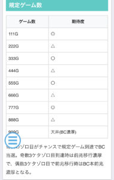

Lスーパービンゴネオ


狙い目
【リセット狙い】
L【スロ塾式リセ狙い】スーパービンゴネオ～期待値表も添えて～
280~天井
【BC間天井狙い】
530Gから
上位AT後は111ゾーン当選濃厚のため0Gから
【ゾーン狙い】
・111Gゾーン
前回天井後以外 90Gから
前回天井後 40Gから
・333Gゾーン 320Gから
※ゾーンは規定ゲーム数を跨いだ後前兆が来るものと思われる。ゾーン当選時は規定ゲーム数踏んでから30-40G後？
【ビンゴポイント狙い】
90ptから
赤なら規定pt近いからpt到達まで？
※CZ中に規定G数到達した場合はCZ終了後に前兆開始する。
【ループポイント狙い】
規定ゲーム数や、ビンゴポイント周期で外した場合にポイント獲得。
エフェクトの色で次回BCの継続期待度アップ。
緑は天井まで残り600Gから、赤、紫はBC当選まで打つ
【有利区間切れ狙い】
差枚+1800枚以上 0Gから111Gゾーンまで
やめ時
BC終了後即やめ？状態確認してやめ？
上位BC後は111Gで引き戻し濃厚のため引き戻し要確認。
その他
規定ゲーム数

ポイント抽選

参考元
基本情報
- メーカー: ベルコ
- 機械割: 97.3% 〜 114.9%
- 導入開始日: 2024年12月16日（月）
- ゲーム性概要: ●ATタイプ ●スーパービンゴネオの後継機 ●上位AT「ハイパービンゴチャンス」搭載 ●上位AT中は7が揃えばすべてHooah!


打ち方
打ち方・小役
打ち方（小役狙い）
［最初に狙う絵柄］

チェリーはリプレイフラグなのでオールフリー打ちでも取りこぼしはないが、左リールにチェリーが止まらないと、チェリーの強弱を見抜くことが難しい（強弱の停止形が同じ）。チェリーを判別したい場合は左リール枠内にチェリーを目押ししよう。
［チェリーの停止形］

［ビンゴ図柄揃い］

変則押しはNG

ナビ非発生時は左1stでの消化を推奨だ。
解析情報通常時
小役関連
小役確率
| 役 | 確率 |
|---|---|
| リプレイ | 約1/7.2 |
| ビンゴ揃い（CZ中除く） | 約1/8 |
| 共通ボール | 約1/100 |
| 弱チェリー | 約1/120 |
| 強ビンゴ揃い | 約1/100 |
| 強チェリー | 約1/240 |
※強ビンゴ揃いは中段揃い ※レア役合算約1/30
規定ゲーム数消化
3桁ゾロ目ゲーム数
3桁ゾロ目ゲーム数到達時はBC当選のチャンス。当選のメインは 奇数の3桁ゾロ目 で、到達時は前兆移行濃厚となる。偶数の3桁ゾロ目で前兆に移行した場合はBC本前兆濃厚だ。 天井の999G到達時はHooah!の発生期待度もアップする。
規定ゲーム数
| ゲーム数 | 抽選 |
|---|---|
| 111G | BC抽選 |
| 333G | BC抽選 |
| 555G | BC抽選 |
| 777G | BC抽選 |
| 999G | BC濃厚（天井） |
3桁ゾロ目ゲーム数到達時の期待度分布
| ゲーム数 | 期待度 |
|---|---|
| 111G | ◎ |
| 222G | △ |
| 333G | ◯ |
| 444G | △ |
| 555G | ◯ |
| 666G | △ |
| 777G | ◎ |
| 888G | △ |
| 999G | 天井（AT濃厚） |
ビンゴポイント
ビンゴポイント概要

ビンゴ揃いのたびにポイントが加算されていき、規定の奇数ゾロ目ポイントになるとCZやBCを抽選（ポイントはリールの右側に表示）。規定ポイント到達で「チャンス」表示に変わり、色で期待度が示唆される。 余ったポイントはBC中に引き継がれるため引き損なしだ。
「設定変更時は平均50G消化で表示」 設定変更時はビンゴポイントが？？表示からスタートして、平均50G消化で表示される。
規定ビンゴポイント
| ビンゴポイント | 振り分け |
|---|---|
| 11pt | ◎ |
| 33pt | ○ |
| 55pt | ○ |
| 77pt | ◎ |
| 99pt | ☆ |
奇数のゾロ目ポイントで抽選される。
規定ポイント到達時のチャンス文字色別期待度 （設定1）
| チャンス文字色 | 期待度 |
|---|---|
| 青 | 8.5％ |
| 黄 | 約25％ |
| 緑 | 約50％ |
| 赤 | 約80％ |
規定ポイント到達時のチャンスの文字色でCZ当選期待度が変化する。
［チャンス表示］

ループポイント
ループポイント概要
規定ゲーム数やビンゴポイントといった周期抽選ハズレ時やCZ失敗などを契機に貯まるポイントで、ポイントが蓄積するほど 次回BCの継続期待度がアップ 。ポイント量はエフェクトの色で示唆される。
エフェクト別BC期待度
| エフェクト | 期待度 |
|---|---|
| 青 | デフォルト |
| 緑 | 67%以上 |
| 赤 | 80%以上 |
| 紫 | 90%以上 |
［青］

［緑］

［赤］

［紫］

THE セグ（CZ）
CZ概要

10G固定のCZでビンゴ揃いすると、3〜７GのSTに突入してゲーム数減算がストップ。 STを5連チャン（コンボ）させればBC濃厚 だ。 STのゲーム数はST突入時に決定。上位ver.のTHE セグハイパーではSTゲーム数が5or7GとなるのでBC当選期待度が大幅にアップする。
THE セグ（CZ）性能
| 項目 | 内容 |
|---|---|
| 当選契機 | レア役時の抽選、規定ビンゴポイント |
| 継続ゲーム数 | 10G＋ST分 |
| STゲーム数 | 3or4or5or7G［ハイパーは5or7G］ |
| BC期待度 | 約40%［ハイパーは約66%］ |
［THE セグハイパー］

［ST］

コンボは1→4というようにジャンプアップする可能性もあるため、必ずしも5連チャンさせなければBCに当選しないわけではない。
［CZ中］BC当選率
| 設定 | CZ中 | 上位CZ（ハイパー）中 |
|---|---|---|
| 1 | 約40% | 約66% |
| 6 | 約50% | 約74% |
STゲーム数振り分け（設定1）
| STゲーム数 | 通常ver. | ハイパー |
|---|---|---|
| 3G | 約50％ | － |
| 4G | 約40％ | － |
| 5G | 約10％ | 約67％ |
| 7G | － | 約33％ |
STゲーム数ごとのBC期待度
| STゲーム数 | 期待度 |
|---|---|
| 3G | 約15％ |
| 4G | 約25％ |
| 5G | 約33％ |
| 7G | 約55％ |
コンボ回数別BC期待度
| コンボ | 期待度 |
|---|---|
| 1コンボ | 約0.3％ |
| 2コンボ | 約2％ |
| 3コンボ | 約12％ |
| 4コンボ | 約50％ |
| 5コンボ | 100% |
直撃抽選
レア役・ビンゴ揃い連続の直撃抽選
通常時は内部状態に応じて、レア役時にCZやBCの直撃を抽選。ビンゴ揃いは3連〜4連でBC抽選、5連すればBC当選濃厚となる。
ビンゴ揃い連続時の抽選
| 回数 | 抽選 |
|---|---|
| 3連 | BC抽選 |
| 4連 | BC抽選 |
| 5連 | BC濃厚 |
演出動画
プレミアムフリーズ
通常時にのみ発生するプレミアム演出。AT直行かつ、ビンゴチャンス300G or ハイパービンゴチャンスが1：1の割合で選択される。
フリーズ
プレミアムフリーズ


通常時に発生するプレミアム演出で、発生時は約50%でハイパービンゴチャンス、約50%で333GスタートのBCへ突入する。
プレミアムフリーズ性能
| 項目 | 性能 |
|---|---|
| 発生タイミング | 通常時 |
| 発生確率 | 約1/54613 |
| 恩恵 | HBCor333GのBC（比率は1：1） |
解析情報ボーナス時
ビンゴチャンス（BC）
BC概要

継続率管理型のATで、今回もラストのカウントダウン7で継続の成否を告知。消化中はゲーム数上乗せやどっきどきゾーン（CZ）を抽選。ビンゴ揃いの連続やビンゴポイント経由で上乗せに当選することもある。
ビンゴチャンス（BC）性能
| 項目 | 内容 |
|---|---|
| 当選契機 | CZ成功、直撃当選など |
| 継続ゲーム数 | 最低33G＋α/セット |
| 1Gあたりの純増 | 約2.8枚 |
| 継続率 | 約50or67or75or80or90％ |
| 消化中の抽選 | ゲーム数上乗せ抽選、 高確移行抽選、ビンゴポイント加算 |
［ゲーム数上乗せ］

ゲーム数上乗せ当選時は赤7が揃って33Gまたは111G以上（Hooah!）を上乗せ。初当り時を含め、赤7揃い時は特化ゾーンのドリームラッシュへ突入する可能性がある。
［カウントダウン7］

「ナナセＧ（グー）」（モニター）の種類で期待度を示唆。BGMストップでBC継続濃厚だ。
ビンゴポイント契機の上乗せ抽選
AT中のビンゴポイント経由の流れも通常時と同じく規定の奇数ゾロ目到達時に抽選。当選時はゲーム数上乗せやCZ突入となる。ビンゴポイントが赤色に変化すれば11or33ptでの規定ポイント到達が濃厚だ。 規定ポイント到達時のチャンスの文字で当選期待度が示唆される。

規定ビンゴポイント
| ビンゴポイント | 振り分け |
|---|---|
| 11pt | ◎ |
| 33pt | ◎ |
| 55pt | ☆ |
※通常時に77pt以上が選択されていた場合は除く
規定ポイント到達時のチャンス文字色別期待度 （設定1）
| チャンス文字色 | 期待度 |
|---|---|
| 青 | 約12％ |
| 黄 | 約33％ |
| 緑 | 約50％ |
| 赤 | 約80％ |
［チャンス表示］

Hooah!
Hooah!概要

シリーズおなじみの3桁上乗せ濃厚となる要素で、基本的に赤7揃い後に発生する可能性がある。 BC中なら上乗せ111G以上、HBC中は上乗せ333枚以上濃厚。 BCで333G表示後に再度Hooah!するとHBC濃厚となる。
Hooah!抽選
| パターン | 抽選値 |
|---|---|
| 発生確率（初当り・上乗せ時・AT継続時） | 約1/25 |
| Hooah!発生時の次段回移行割合 （111G→222G→333G～など） | 約50% |
［Hooah!経由のHBC突入］

Hooah!で111G→222G→333Gと上がっていき、333Gで再びHooahが発生すると扉が閉まってHBCへ突入する。
どっきどきゾーン（AT中CZ）
AT中CZ概要

7G間のCZで 消化中はビンゴ揃い確率がアップ 。ビンゴ揃いのたびに上乗せを抽選しつつ、内部的にポイントを加算。貯まったポイントに応じて最終ゲームで上乗せの当落が告知される。上乗せ当選後は再度CZへ突入するため、上乗せループにも期待できる。 また、上位ver.のどっきどきゾーンハイパーは突入した時点で上乗せ濃厚。自力で突破できればHooah!の大チャンスとなる。
どっきどきゾーン（AT中CZ）性能
| 項目 | 内容 |
|---|---|
| 当選契機 | レア役時の抽選など |
| 継続ゲーム数 | 7G |
| 成功期待度 | 約25% |
| 消化中の抽選 | ビンゴ揃いでゲーム数上乗せ抽選 |
| その他 | ゲーム数上乗せ時は再度CZへ突入、 ハイパーは上乗せ濃厚かつ自力成功で Hooah!のチャンス |
［最終ゲーム］

ボタンの色にも注目！
［どっきどきゾーンハイパー］

最終ゲームの色（段階）別期待度（設定1）
| 色 | 期待度 |
|---|---|
| 白 | 約2％ |
| 青 | 約5％ |
| 黄 | 約18％ |
| 緑 | 約33％ |
| 赤 | 約80％ |
| レインボー | 100% |
※レインボーは到達した段階で上乗せ発生
緑以上への発展に期待したい。
ドリームラッシュ
ドリームラッシュ概要

赤7揃い時の一部で突入する超強力なゲーム数上乗せの特化ゾーン。継続率管理型で、継続率に漏れるまで（7揃いカットインに失敗するまで）毎ゲーム上乗せを抽選する。BC中と同じく、上乗せは33Gor111G以上。継続期待度は開始時のスターランプ（筐体上部）の色で示唆される。
7揃いには保証回数があり、保証分終了後から継続率で抽選する。
スターランプ色別の平均上乗せ回数
| 色 | 平均上乗せ回数 |
|---|---|
| 青 | 4.5回 |
| 黄 | 5.3回 |
| 緑 | 7.1回 |
| 赤 | 10.2回 |
［スターランプ］

［突入時のリールロック］

初当り時や上乗せ時に赤7を揃えた後、夢文字が浮かぶリールロック発生で突入のチャンス。最終的に3段階目まで行けばドリームラッシュ突入となる。
［カットイン時に赤7が揃えば上乗せ］


赤カットインなら大チャンス！
ハイパービンゴチャンス（HBC）
HBC概要

BC中のHooah!の一部やBC継続時の一部（特定セット到達）、エンディング到達後に突入する差枚数管理型AT。終了後はループ率約80%のハイパーカウントダウン7へ移行する。もし引き戻せなかった場合でも111GでのBC引き戻し濃厚となるため、上位BC到達時の恩恵はかなり大きい。
ハイパービンゴチャンス（HBC）性能
| 項目 | 内容 |
|---|---|
| 当選契機 | BC継続時の一部、Hooah！発生時の一部、 エンディング到達後 |
| 継続ゲーム数 | 初当り時は2500枚スタート、 2セット目以降は最低333枚＋α/セット |
| 1Gあたりの純増 | 約5.0枚 |
| 継続率 | 80%以上 （ハイパーカウントダウン7とのループ） |
| 消化中の抽選 | 差枚数上乗せ抽選、 高確移行抽選、ビンゴポイント加算 |
［差枚数上乗せ］

上乗せ時は必ずHooah!が発生して333枚以上を上乗せ。
［究極のHooah!］


残り99枚から桁数がアップする究極のプレミアだ！
［ハイパーカウントダウン7］

ツラヌキ・有利区間
ツラヌキ条件＆性能
| 項目 | 性能 |
|---|---|
| 条件 | エンディング到達後 |
| 恩恵 | HBC突入 HBCの詳細はコチラ |
［エンディング］

その他
天井到達時のAT駆け抜け時について
天井で当選したATが単発（駆け抜け）だった場合、ループポイントを引き継ぐ場合がある。 AT終了後、1G目に液晶にエフェクトが発生した場合は引き継ぎ濃厚だ。
演出情報
Hooah！濃厚演出
Hooah！濃厚パターン
| No. | パターン |
|---|---|
| 1 | 金のカウントダウン7 |
| 2 | 夢ロゴ出現時のCZ成功 |
| 3 | BC開始時のダブル7揃い |
| 4 | BC開始時の7テンパイ音が「ふぅあふぅあ！」 |
| 5 | カウントダウン7中の紫ナビ |
通常時
ステージ解説
［カジノステージ］

［テラスステージ］

［天空ステージ］

高確率に期待！
［セグッてビンゴ］

前兆濃厚。
［月光ステージ］

前兆＋大チャンス。
前兆ステージ移行時の本前兆期待度
| ステージ | 期待度 |
|---|---|
| セグッてビンゴ | 約33％ |
| 月光ステージ | 約66％ |
［メッセージ受信中］

BC終了後などに移行する高確濃厚状態だ。
ボールの示唆
ボールの組み合わせによって高確や前兆などが示唆される。

ボールの停止パターン別示唆
| パターン | 示唆 |
|---|---|
| 同色 | 青＜緑＜赤の順にチャンス |
| 順目・逆順目 | 順目は本前兆濃厚、逆順目は前兆のチャンス |
| 3つの合計が9 | カブ目で本前兆濃厚 |
| 特定の語呂 | パチスロ（846）などが止まれば!? |
| F停止 | 1つでも停止すればチャンス、2つ停止で大チャンス |
リーチ目パターン一覧（すべてBC濃厚）
| 出目 | 語呂 |
|---|---|
| 175 | イナゴ |
| 223 | 富士山 |
| 415 | ヨイコ |
| 714 | ナイス |
| 846 | パチスロ |
| 865 | ベルコ |
| 181 | ワンバーワン |
| 352 | サルカニ |
| 373 | ミナミ |
| 514 | コイヨ |
| 613 | 無意味 |
| 681 | 無敗 |
| 753 | 七五三 |
ビンゴチャンス（BC）
BC中のステージ
| パターン | 示唆 |
|---|---|
| カジノステージ | デフォルト |
| 天空ステージ | 高確のチャンス |
| 大富豪ステージ | 高確の大チャンス |
| カーニバルステージ | BC継続濃厚 |
［カジノステージ］

［天空ステージ］

［大富豪ステージ］

［カーニバルステージ］

カウントダウン7のパターン
| パターン | 示唆 |
|---|---|
| 黒（黒ナナセG） | デフォルト |
| 赤（赤ナナセG） | 期待度約85%以上 |
| 初代ver. | 継続濃厚 |
| 金（金ナナセG） | 継続＋Hooah!濃厚 |
ナビ色別示唆
| ナビ | BC中 | HBC中 |
|---|---|---|
| 赤ナビ | 約50%でHooah！ | 約50%で1111枚以上濃厚 |
| 紫ナビ | Hooah！濃厚 | 1111枚以上濃厚 |
［デフォルト］

［赤］

［初代ver.］

［金］

［赤ナビ］

［紫ナビ］

テンパイボイスの示唆
| ボイス | 示唆 |
|---|---|
| キタキター！ | 継続率67％以上 |
| 地球は私のものよ！ | 継続率80％以上 |
| ハイテンション！ | 50％でドリームラッシュ |
| ふぅあふぅあ！ | Hooah!濃厚 |

BC開始時に揃う赤7テンパイ時のボイスに注目！
BC中の歌ありBGMの示唆
| BGM | 歌い出し | 示唆 |
|---|---|---|
| Happy Time | 「シャンランララン～」 | 継続濃厚 |
| メリーゴーランド | 「まわる～まわる～」 | 継続＋継続率67%以上 |
| BIN！GO！ | 「ドジって、ばかりで～」 | 継続＋継続率80%以上 |
| life is bingo | 「人生上々なんて～」 | 継続＋継続率90%以上 |
歌ありのBGMに変化すれば当該セットの継続濃厚かつ、歌の種類で継続率が示唆される。